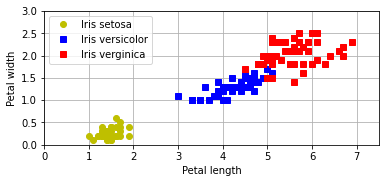

matplotlib.pyplot 2부
Contents
12. matplotlib.pyplot 2부¶
참고
Matplotlib Tutorial 를 참고하였습니다.
annotation 추가 필요
plt.axis([0, 7.5, 0, 3])plt.gca().set_aspect("equal")plt.grid()
기본 설정
import numpy as np
맷플롯립Matplotlib은 간단한 그래프 도구를 제공하는 라이브러리다.
import matplotlib
설치된 버전은 다음과 같이 확인한다.
matplotlib.__version__
'3.4.3'
맷플롯립의 대부분의 함수는 파이플롯pyplot 모듈에 포함되어 있으며
관행적으로 plt 별칭으로 불러온다.
import matplotlib.pyplot as plt
12.1. 활용 예제¶
붓꽃 데이터셋을 아래 방식으로 불러온다.
from sklearn import datasets
iris = datasets.load_iris(as_frame=True)
Bunch 객체는 데이터셋을 사전 형식으로 담으며, 키를 객체의 속성처럼 다룰 수 있다.
사용된 키를 확인해보자.
iris.keys()
dict_keys(['data', 'target', 'frame', 'target_names', 'DESCR', 'feature_names', 'filename', 'data_module'])
이중에 붓꽃 데이터는 'data' 키의 값으로 저장되어 있으며, 데이터프레임 객체다.
iris.data # iris['data']
| sepal length (cm) | sepal width (cm) | petal length (cm) | petal width (cm) | |
|---|---|---|---|---|
| 0 | 5.1 | 3.5 | 1.4 | 0.2 |
| 1 | 4.9 | 3.0 | 1.4 | 0.2 |
| 2 | 4.7 | 3.2 | 1.3 | 0.2 |
| 3 | 4.6 | 3.1 | 1.5 | 0.2 |
| 4 | 5.0 | 3.6 | 1.4 | 0.2 |
| ... | ... | ... | ... | ... |
| 145 | 6.7 | 3.0 | 5.2 | 2.3 |
| 146 | 6.3 | 2.5 | 5.0 | 1.9 |
| 147 | 6.5 | 3.0 | 5.2 | 2.0 |
| 148 | 6.2 | 3.4 | 5.4 | 2.3 |
| 149 | 5.9 | 3.0 | 5.1 | 1.8 |
150 rows × 4 columns
품종 데이터는 'target' 키의 값으로 저장되어 있으려, 시리즈 객체다.
기호 |
품종 |
|---|---|
0 |
세토사(Iris setosa) |
1 |
버시컬러(Iris versicolor) |
2 |
버지니카(Iris verginica) |
iris.target # iris['target']
0 0
1 0
2 0
3 0
4 0
..
145 2
146 2
147 2
148 2
149 2
Name: target, Length: 150, dtype: int64
시각화를 위해 꽃잎petal의 길이와 너비 두 개의 특성만 선택한다.
values속성: 데이터프레임 또는 시리즈의 항목으로 구성된 넘파이 어레이
X = iris.data[["petal length (cm)", "petal width (cm)"]].values
y = iris.target.values
꽃잎의 길이와 너비를 이용하여 품종별로 산점도를 그려보자.
각 데이터셋의 산점도를 다른 색을 이용하여 그리면 다음과 같다.
plt.plot(X[:, 0][y == 0], X[:, 1][y == 0], "yo", label="Iris setosa")
plt.plot(X[:, 0][y == 1], X[:, 1][y == 1], "bs", label="Iris versicolor")
plt.plot(X[:, 0][y == 2], X[:, 1][y == 2], "rs", label="Iris verginica")
plt.xlabel("Petal length")
plt.ylabel("Petal width")
plt.legend(loc="upper left")
plt.axis([0, 7.5, 0, 3])
plt.gca().set_aspect("equal")
plt.grid()

x0 = np.linspace(0, 7.5, 200)
pred_1 = 5 * x0 - 12
pred_2 = -x0 + 6.5
pred_3 = 0.05 * x0 + 0.6
plt.plot(x0, pred_1, "g--", linewidth=2)
plt.plot(x0, pred_2, "m-.", linewidth=2)
# plt.plot(x0, pred_3, "y-", linewidth=2)
plt.plot(X[:, 0][y==0], X[:, 1][y==0], "yo", label="Iris setosa")
plt.plot(X[:, 0][y==1], X[:, 1][y==1], "bs", label="Iris versicolor")
plt.plot(X[:, 0][y==2], X[:, 1][y==2], "rs", label="Iris verginica")
plt.xlabel("Petal length")
plt.ylabel("Petal width")
plt.legend(loc="upper left")
plt.axis([0, 7.5, 0, 3])
plt.gca().set_aspect("equal")
plt.grid()